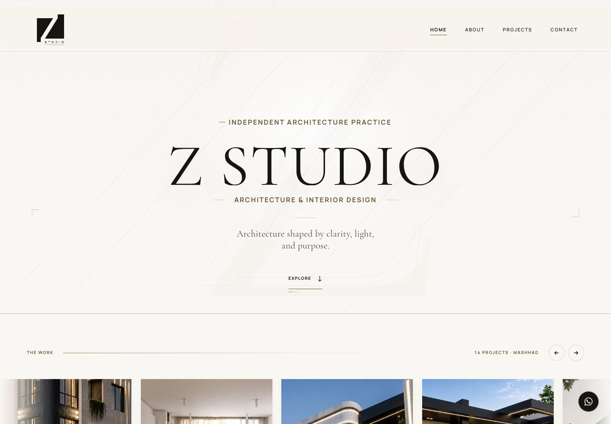

zstudiosdesign.com

01 / FEATUREDLIVE WEBSITE
Z Studio Live website
A portfolio website for an architecture and interior design practice. A visual presentation of the studio’s work, with project browsing, an architect profile, and a clear contact path.
My role: Website developer
Explore the studio→Browse projects→Get in touch
Project overview: Z Studio
The need
Present an architecture and interior design practice online, with the work itself at the center of the experience.
My contribution
Built the studio’s website, bringing its project portfolio, practice profile, and contact information into one web experience.
Explore it live
Visit the working website to see the project gallery and navigation. The architecture and interior design work belongs to Z Studio; my contribution is the website.